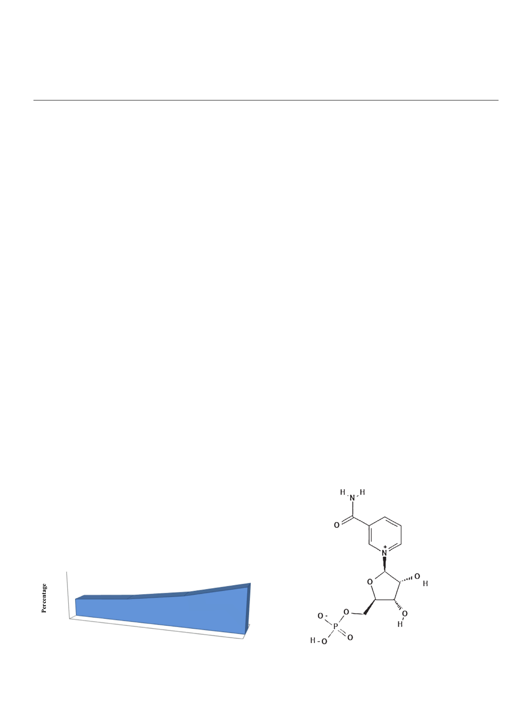

H. Nadeeshani, J. Li, T. Ying et al.
Journal of Advanced Research 37 (2022) 267–278
large influx of NMN based anti-aging products on the market, proper clinical investigations are urgently
needed to find out the effectiveness and safety of NMN supplementation.
Ó 2022 The Authors. Published by Elsevier B.V. on behalf of Cairo University. This is an open access article
under the CC BY-NC-ND license (http://creativecommons.org/licenses/by-nc-nd/4.0/).
Introduction
The successful control of communicable diseases in the 20th
century led to a sharp rise in the mean life expectancy of many
countries. In 2019, number of persons, aged 65 or over was 702.9
million in the world and it is projected to be 1548.9 million by
2050 [1]. Percentage of global population aged 65 years or over
in 2019 and future projections according to the medium-variant
projection is illustrated in Fig. 1. Along with increasing elderly pop-
ulation, the prevalence of age-related diseases such as atheroscle-
rosis, hypertension, osteoarthritis, neurodegenerative diseases
including Alzheimer’s and Parkinson’s diseases, diabetes mellitus
and cancers has gone up leading to heavy global socioeconomic
and medical burden [2].
Therefore, age management medical practices have been mush-
rooming in the world for recommending nutritional supplements,
various drugs, exercise programs, hormone therapies and other
treatments to mitigate the effect of aging. Consequently, the con-
sumer demand and the global market value for anti-aging health
products are on the rise [3]. Excessive demand of consumers and
high profit margin for manufacturers are the major driving force
behind the release of anti-aging health products without adequate
safety testing [4]. Thus, careful comprehensive and stepwise scien-
tific preclinical and clinical investigations are crucial to be
conducted.
Among various anti-aging health products, nicotinamide
mononucleotide (NMN) has been gaining an increasing attention
as a promising anti-aging product. The mitochondrial decay, which
is responsible for aging, can be reversed by the increased levels of
nicotinamide adenine dinucleotide (NAD+) in the body. NMN is a
precursor of NAD+ that acts as an intermediate in NAD+ biosynthe-
sis, while dietary supplements of NMN are found to increase the
NAD+ levels in the body [5]. NMN is a bioactive nucleotide formed
by the reaction between a nucleoside comprising nicotinamide and
ribose and a phosphate group [6]. It naturally presents in a variety
of plant and animal food sources. Furthermore, several studies
have been carried out to investigate the potential of biotechnolog-
ical production and purifying NMN from bacterial and yeasts [7].
Other than anti-aging potential of NMN, a wide range of phar-
macological activities have been identified in a number of in vivo
studies. The link between NMN and the incidence of Alzheimer’s
disease, obesity and associated complications, cerebral and cardiac
ischemia, and age- and diet-induced type 2 diabetes has been
studied extensively [8]. Though, previous attention of scientific
community has been paid on NMN only as an intermediate in
NAD+ biosynthesis, recently, a number of pharmacological activi-
ties triggered by increasing NAD+ levels in the body, especially
anti-aging activity have been taken the centre of attention. As a
result, a number of studies including cell culture, animal models
and human clinical trials have been conducted to investigate the
promises and the safety concerns of using NMN as an anti-aging
health product and the potential of using NMN as a supplement
to avoid age-related disease conditions. Hence, this review intends
to present the most recent advances and current knowledge on
promises and safety concerns of the use of NMN as an anti-aging
health product, its other pharmacological and therapeutic uses
and mechanism of action underlying the anti-aging properties with
an interest to stimulate further research and offer an insight to the
possibility of translating successful preclinical and clinical anti-
aging outcomes of NMN into an effective treatment of aging and
age-related diseases.
What is nicotinamide mononucleotide (NMN)?
Nicotinamide mononucleotide (NMN) exists as a and b anome-
ric forms while it is identified as nicotinamide ribotide,
nicotinamide-1-ium-1-b-D-ribofuranoside 50-phosphate, b-
nicotinamide ribose monophosphate and 3-carbamoyl-1-[5-O-
(hydroxyphosphinato)-b-D-ribofuranosyl] pyridinium, among
others [9]. The b form is the active anomer and NMN is naturally
structured as a result of a reaction, which catalysed by nicoti-
namide phosphoribosyltransferase enzyme, between a phosphate
group and a nucleoside comprising nicotinamide (an amide form
of vitamin B3) and ribose [10]. NMN is a bioactive nucleotide with
a pyridine base and its molecular weight is 334.22 g/mol. It is fairly
acidic and water-soluble compound. The solubility has been
reported to be 1.8 mg/mL [11] (Fig. 2).
NMN is mainly located in the nucleus, mitochondria and cyto-
plasm, whereas in the human body, it can be found in placenta tis-
sue and body fluids such as blood and urine [9]. It is naturally
found in a variety of fruits and vegetables including immature soy-
bean pods, cabbage, cucumber, broccoli, tomato, mushroom and
Nicotinamide base
25
20
15
10 9.1%
5
0
2019
11.7%
15.9%
2030
2050
Year
22.6%
2100
Fig. 1. Percentage of global population aged 65 years or over according to the
medium-variant projection (UN, 2019).
268
Ribose sugar
Phosphate group
Fig. 2. Chemical structure of nicotinamide mononucleotide (NMN).